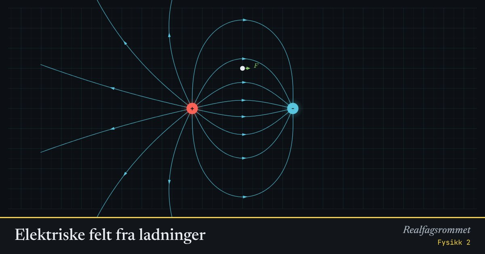

Elektriske felt fra ladninger
Feltlinjene viser hvilken vei kraften på en positiv ladning peker. Der linjene ligger tett, er feltet sterkt. Dra ladningene og testladningen rundt.
Start animasjonen
Formler
Om animasjonen
Feltlinjene starter på positive ladninger og slutter på negative. De krysser aldri hverandre.
Den hvite testladningen er en liten positiv ladning. Den grønne pilen er kraften på den, .
Mellom to plater med motsatt ladning (en kondensator) blir feltet nesten homogent: like sterkt og med samme retning overalt.
Potensialet er størst (rødt) nær positive ladninger og lavest (blått) nær negative.
Prøv dette
- Plasser testladningen midt mellom to like ladninger. Hva er kraften der?
- Hvor faller feltstyrken når du dobler avstanden til en punktladning? Sjekk med tallene.
- Lag en kondensator. Hvordan ser feltet ut mellom platene og utenfor?
- Hvorfor kan to feltlinjer aldri krysse hverandre?
Kompetansemål
- Fysikk 2: Elektriske felt og krefter